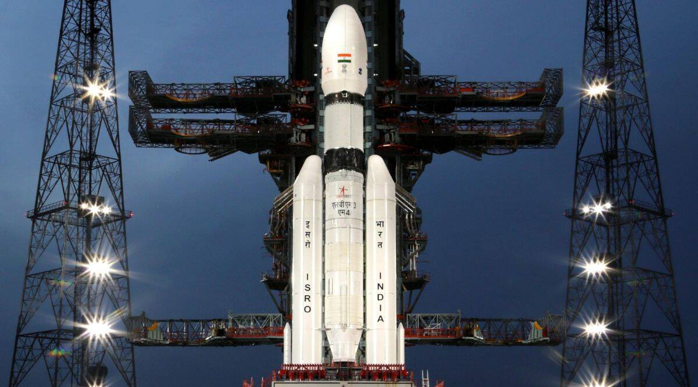

Chandrayaan-3
Chandrayaan-3 is India's third lunar exploration mission, successfully launched on July 14, 2023, and landed on the Moon's south pole on August 23, 2023.
Mission Overview
Chandrayaan-3 is part of the Indian Space Research Organisation's (ISRO) Chandrayaan program, aimed at exploring the Moon. This mission consists of a Vikram lander and a Pragyan rover, designed to demonstrate safe landing and roving capabilities on the lunar surface. Unlike its predecessor, Chandrayaan-2, which faced a landing failure, Chandrayaan-3 successfully achieved a soft landing, making India the first country to land near the lunar south pole and the fourth nation overall to land on the Moon.
Launch and Landing
- Launch Date: July 14, 2023, at 14:35 IST from the Satish Dhawan Space Centre in Sriharikota, India.
- Landing Date: August 23, 2023, at 18:04 IST (12:33 UTC) near the lunar south pole.
- Vikram Lander: Responsible for landing on the Moon and deploying the rover. It carries scientific instruments to conduct experiments on the lunar surface.
- Pragyan Rover: Designed to explore the lunar surface, analyze soil samples, and perform in-situ chemical analysis.
- Propulsion Module: Carried the lander and rover to lunar orbit and is equipped with scientific instruments for Earth observations after the lander was deployed.
- Thermal Conductivity Measurements: Using the Chandra’s Surface Thermophysical Experiment (ChaSTE) to study the thermal properties of the lunar surface.
- Seismic Activity Monitoring: The Instrument for Lunar Seismic Activity (ILSA) will measure seismicity around the landing site.
- Elemental Composition Analysis: The rover is equipped with an Alpha Particle X-ray Spectrometer (APXS) and a Laser Induced Breakdown Spectroscope (LIBS) to analyze the elemental composition of the lunar soil.
Mission Components
Scientific Objectives
Chandrayaan-3 aims to conduct various scientific experiments, including:
Significance
Chandrayaan-3 not only enhances India's capabilities in space exploration but also contributes valuable data for future lunar missions, including potential human landings as part of international collaborations like NASA's Artemis program. The mission's success marks a significant milestone in India's space endeavors and demonstrates advanced technologies for future interplanetary missions.
